SOFTWARE LAYER COMMUNICATION
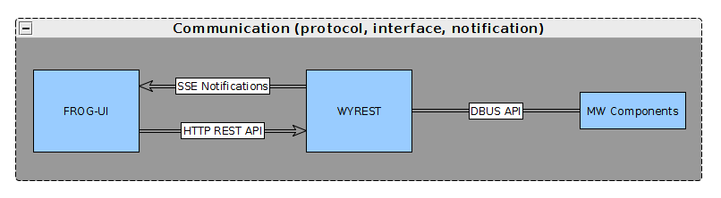
Wyrest uses a notification mechanism defined here to notify events to applications via SSE (Server-Sent Event)
HTTP routes provided by Wyrest are listed here
List of methods implemented by middleware components and exposes through DBus API : interfaces
OVERVIEW
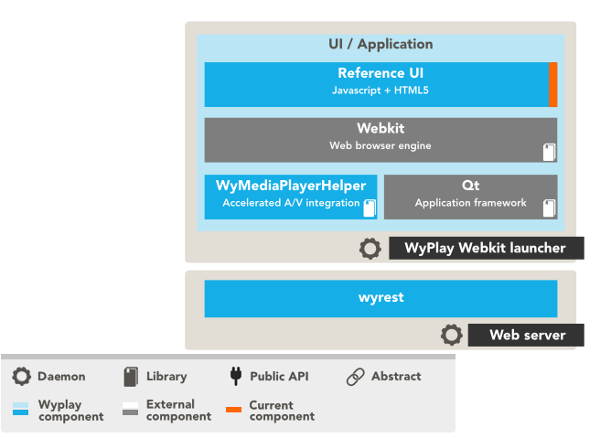
wyrest is a RESTful API, it exposes all the middleware functionalities through HTTP and communicates with middleware component through the D-Bus API.
Code, Présentation, Fonctionnalités, Howto, Références
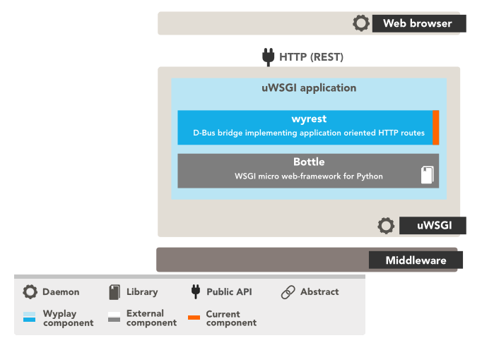
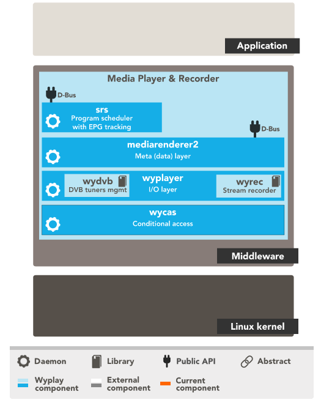
SRS : Scheduled Recording Service, respecte la norme UPnP SRS. Expose API over D-Bus not over network
Flexible architecture to support evolutions >
TO BE VERIFIED
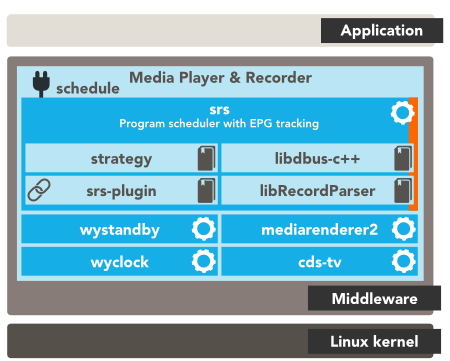
cds-tv : EPG provider component : process DVB Service information tables and provides list of channels
strategy : resolve conflicts btw recordings
MEDIARENDERER2 : default record launcher (audio/video streams) : play, record, pause, stop, rw, ff, select A/V and subtitle
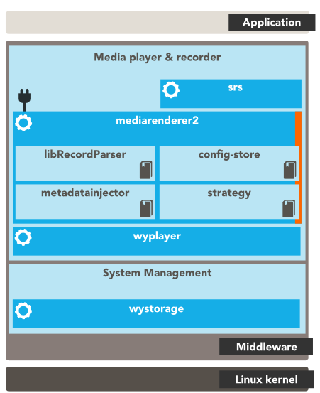
config-store : manage configuration through DBus or C++ API (content parameters, parental control, protection)
WYPLAYER : multimedia player responsible for rendering audio and video. See compatibility with supported stantards.
WYCAS
: built-in features to CAS integrators
- filter PMT sections to descramble live DVD services
- filter CAT sections to receive EMM sections
/!\ limitations : i/ currently only work with unique CAS Driver ii/ no D-Bus interface for operator specific objects like purchases
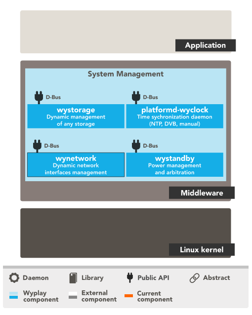
wystorage : mount disks/USB keys
platformd-wyclock : time system
network manager : network interface configuration, monitoring connections/disconnections, list available networks
wystandby : manages the power state of the board (ready, standby, suspend, low-pwer, wake-up alarm)
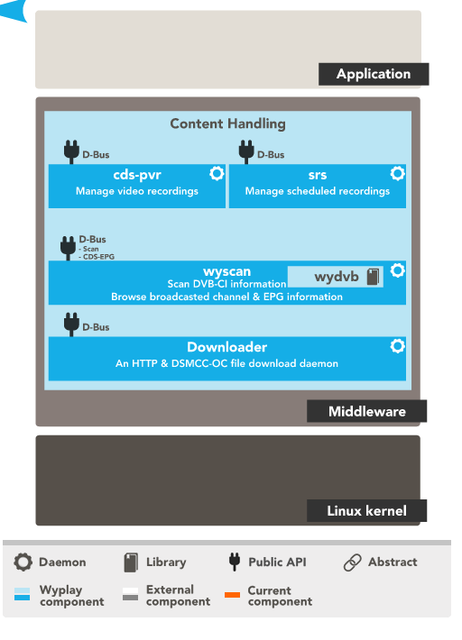
cds-pvr : monitors the local list of recordings, which is populated by other components
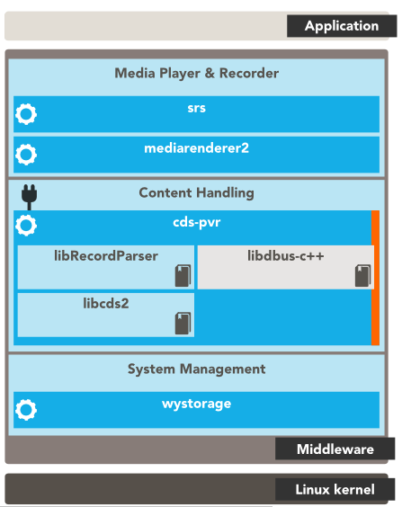
- framework enabling scan DVB transponders and retrieve the Service Information tables
- hosts cds-tv : services list ( includes fav. lists) and EPG
/!\ you have to implement a plugin with yout product-specific scanning algorithm
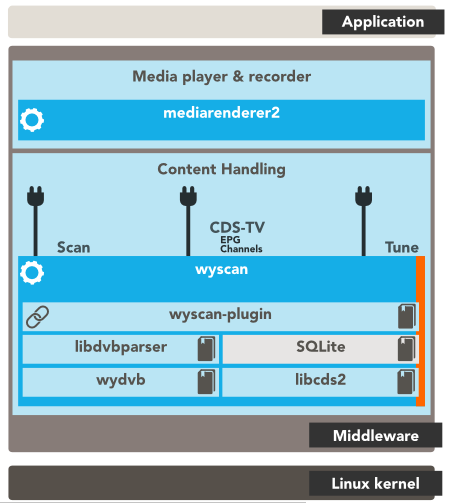
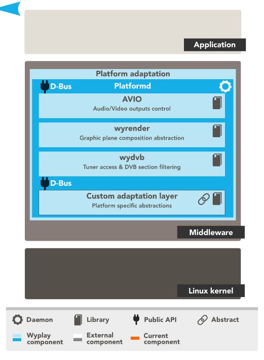
avio : dead link
wyrender : interface to be implemented in order to display frames : it allows hardware-specific graphical display operations
wydvb : manages DVB tuners of the Set-top box
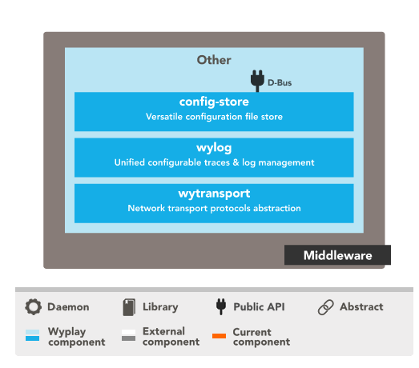
config-store : manages configuration for all components - through DBus or C++ APIs
wylog : library to manage component logs. Itis configurable.
wytransport : gives access to multimedia content WITH PUGINS FOR TRANSPORT PROTOCOLS LIKE http, https, http/dlna, smb